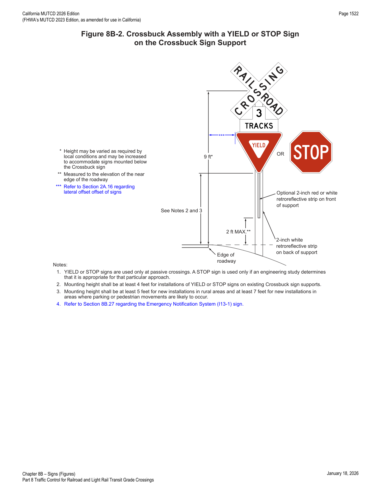
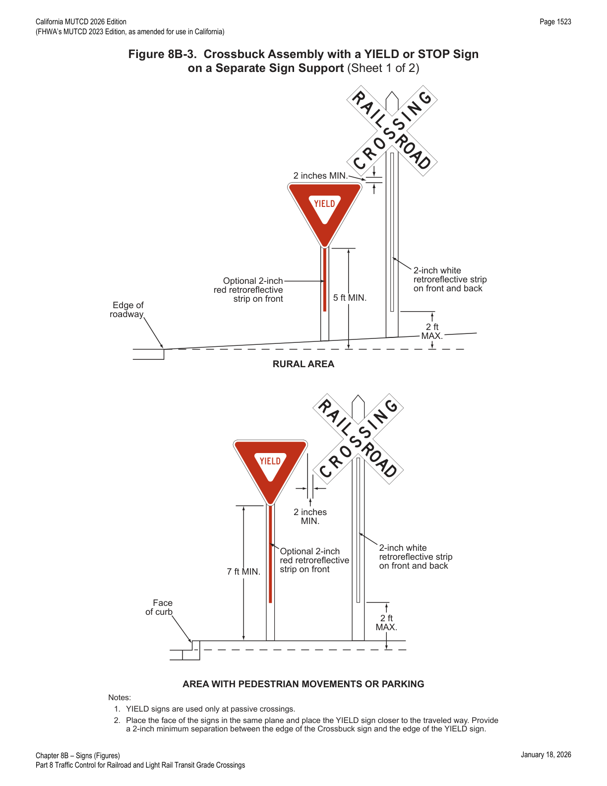
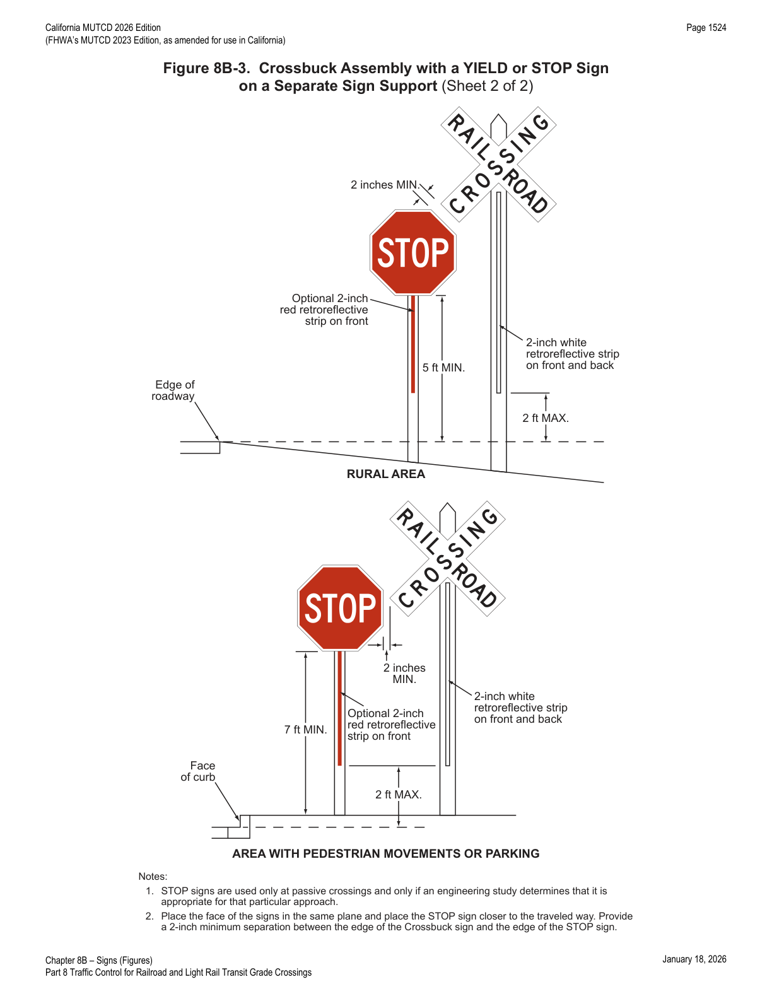
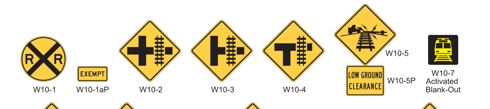
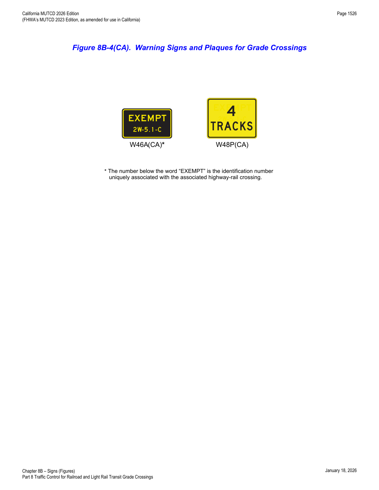
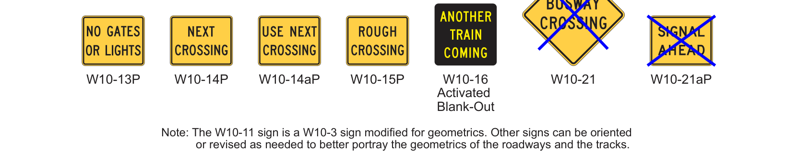
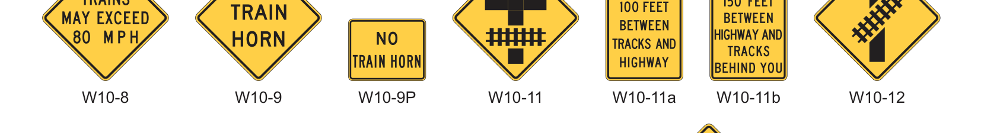
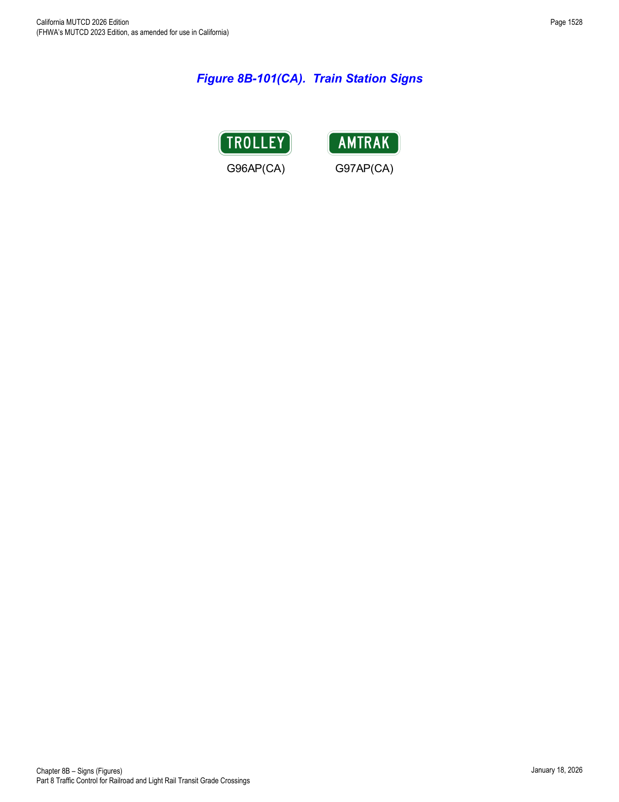
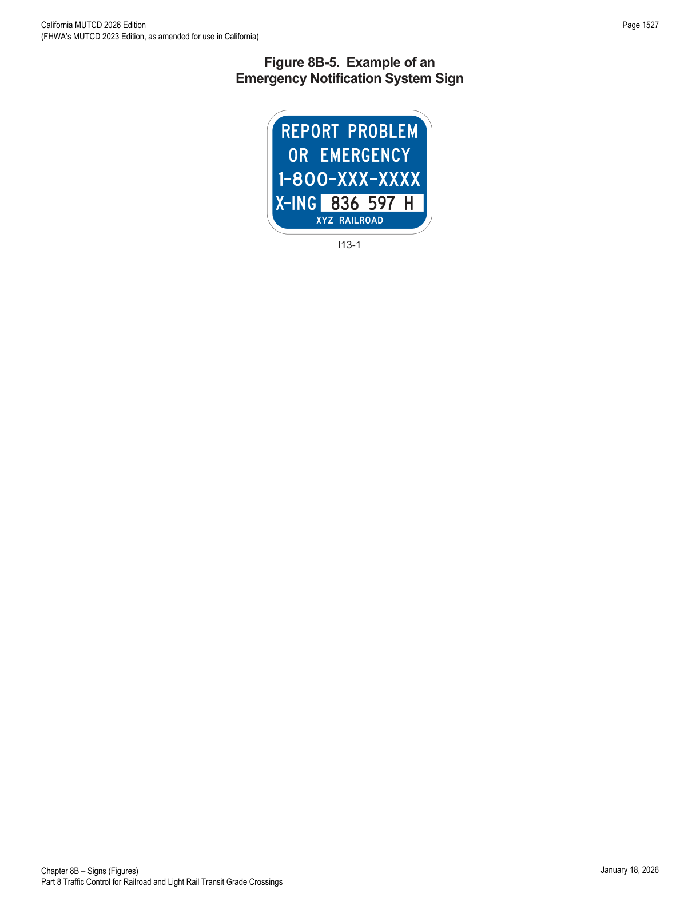
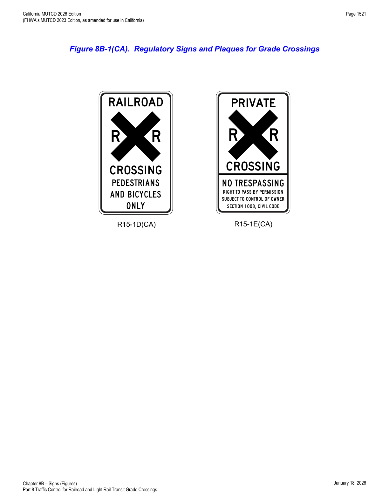

Part 8 · Traffic Control for Railroad and Light Rail Transit Grade Crossings · Chapter 8B
Signs
Every sign and plaque used at highway-rail and highway-LRT grade crossings — the Crossbuck and its YIELD/STOP assemblies, the W10-series advance warning signs and their many supplemental plaques, the R15-series LRT regulatory signs, and the identification/emergency-notification signs — with minimum sizes, mounting details, and conditions of use for each.
8B.01Purpose and Application
- 01Passive traffic control systems, consisting of signs and pavement markings only, identify and direct attention to the location of a grade crossing and advise road users to reduce their speed or stop at the grade crossing as necessary in order to yield to any rail traffic occupying, or approaching and in proximity to, the grade crossing.
- 02Signs and markings regulate, warn, and guide road users so that they, as well as LRT vehicle operators on mixed-use alignments, can take appropriate action when approaching a grade crossing.
- 03Unless otherwise provided in this Chapter, the provisions of Part 2 are applicable to the design and location of signs at grade crossings.
- 04Signs placed in advance of a grade crossing should be positioned so as not to obstruct the motorist's line of sight to the flashing-light signals or other traffic control devices at the grade crossing.
8B.02Sizes of Grade Crossing Signs
- 02Signs larger than those shown in Table 8B-1 may be used (see Section 2A.07).
| Sign or Plaque | Designation | Section | Conv. Road — Single Lane | Conv. Road — Multi-Lane | Expressway | Freeway — Minimum | Freeway — Oversized |
|---|---|---|---|---|---|---|---|
| Stop | R1-1 | 8B.04, 8B.05 | 30 x 30 | 36 x 36 | 36 x 36 | — | 48 x 48 |
| Yield | R1-2 | 8B.04, 8B.05 | 30 x 30 x 30 | 36 x 36 x 36 | 36 x 36 x 36 | — | 48 x 48 x 48 |
| No Right Turn – Train (symbol) | R3-1a | 8D.10 | 24 x 30 | 30 x 36 | — | — | — |
| No Left Turn – Train (symbol) | R3-2a | 8D.10 | 24 x 30 | 30 x 36 | — | — | — |
| Do Not Stop on Tracks | R8-8 | 8B.07 | 24 x 30 | 24 x 30 | 36 x 48 | — | 36 x 48 |
| Tracks Out of Service | R8-9 | 8B.08 | 24 x 24 | 24 x 24 | 36 x 36 | — | 36 x 36 |
| Stop Here When Flashing | R8-10 | 8B.09 | 24 x 36 | 24 x 36 | — | — | 36 x 48 |
| Stop Here When Flashing | R8-10a | 8B.09 | 24 x 30 | 24 x 30 | — | — | 36 x 42 |
| Stop Here on Red | R10-6 | 8B.10 | 24 x 36 | 24 x 36 | — | — | 36 x 48 |
| Stop Here on Red | R10-6a | 8B.10 | 24 x 30 | 24 x 30 | — | — | 36 x 42 |
| Left (Right) Lane Signal | R10-10b | 8D.11 | 30 x 36 | 30 x 36 | — | 24 x 30 | — |
| Left (Right) Turn Lane Signal | R10-10c | 8D.11 | 30 x 42 | 30 x 42 | — | 24 x 36 | — |
| Grade Crossing (Crossbuck) | R15-1 | 8B.03 | 48 x 9 | 48 x 9 | — | — | — |
| Number of Tracks (plaque) | R15-2P | 8B.03 | 27 x 18 | 27 x 18 | — | — | — |
| Exempt (plaque) | R15-3P | 8B.11 | 24 x 12 | 24 x 12 | — | — | — |
| Light Rail Only Right Lane | R15-4a | 8B.12 | 24 x 30 | 24 x 30 | — | — | — |
| Light Rail Only Left Lane | R15-4b | 8B.12 | 24 x 30 | 24 x 30 | — | — | — |
| Light Rail Only Center Lane | R15-4c | 8B.12 | 24 x 30 | 24 x 30 | — | — | — |
| Light Rail Do Not Pass (symbol) | R15-5 | 8B.13 | 24 x 30 | 24 x 30 | — | — | — |
| Do Not Pass Stopped Train | R15-5a | 8B.13 | 24 x 30 | 24 x 30 | — | — | — |
| No Motor Vehicles On Tracks (symbol) | R15-6 | 8B.14 | 24 x 24 | 24 x 24 | — | — | — |
| Do Not Drive On Tracks | R15-6a | 8B.14 | 24 x 30 | 24 x 30 | — | — | — |
| Light Rail Divided Highway (symbol) | R15-7 | 8B.15 | 24 x 24 | 24 x 24 | — | — | — |
| Light Rail Divided Highway (T-Intersection) (symbol) | R15-7a | 8B.15 | 24 x 24 | 24 x 24 | — | — | — |
| Look | R15-8 | 8E.03 | — | — | — | 18 x 9 | — |
| Grade Crossing Advance Warning | W10-1 | 8B.06 | 36 Dia. | 36 Dia. | 48 Dia. | — | 48 Dia. |
| Exempt (plaque) | W10-1aP | 8B.11 | 24 x 12 | 24 x 12 | — | — | — |
| Grade Crossing and Intersection Advance Warning (symbol) | W10-2, 3, 4 | 8B.06 | 36 x 36 | 36 x 36 | 48 x 48 | — | 48 x 48 |
| Low Ground Clearance (symbol) | W10-5 | 8B.16 | 36 x 36 | 36 x 36 | 48 x 48 | — | 48 x 48 |
| Low Ground Clearance (plaque) | W10-5P | 8B.16 | 30 x 24 | 30 x 24 | — | — | — |
| Light Rail Activated Blank-Out (symbol) | W10-7 | 8B.17 | 24 x 24 | 24 x 24 | — | — | — |
| Trains May Exceed 80 MPH | W10-8 | 8B.19 | 36 x 36 | 36 x 36 | 48 x 48 | — | 48 x 48 |
| No Train Horn | W10-9 | 8B.20 | 36 x 36 | 36 x 36 | 48 x 48 | — | 48 x 48 |
| No Train Horn (plaque) | W10-9P | 8B.20 | 30 x 24 | 30 x 24 | — | — | — |
| Storage Space (symbol) | W10-11 | 8B.21 | 36 x 36 | 36 x 36 | 48 x 48 | — | 48 x 48 |
| Storage Space XX Feet between Tracks & Highway | W10-11a | 8B.21 | 30 x 36 | 30 x 36 | — | — | — |
| Storage Space XX Feet between Highway & Tracks Behind You | W10-11b | 8B.21 | 30 x 36 | 30 x 36 | — | — | — |
| Skewed Crossing (symbol) | W10-12 | 8B.22 | 36 x 36 | 36 x 36 | 48 x 48 | — | 48 x 48 |
| No Gates or Lights (plaque) | W10-13P | 8B.23 | 30 x 24 | 30 x 24 | — | — | — |
| Next Crossing (plaque) | W10-14P | 8B.24 | 30 x 24 | 30 x 24 | — | — | — |
| Use Next Crossing (plaque) | W10-14aP | 8B.24 | 30 x 24 | 30 x 24 | — | — | — |
| Rough Crossing (plaque) | W10-15P | 8B.25 | 30 x 24 | 30 x 24 | — | — | 36 x 30 |
| Another Train Coming Activated Blank-Out | W10-16 | 8B.18 | 30 x 30 | 30 x 30 | — | — | — |
| Busway Crossing | W10-21 | 8B.06 | 36 x 36 | 36 x 36 | 48 x 48 | — | 48 x 48 |
| Signal Ahead (plaque) | W10-21aP | 8B.06 | 30 x 24 | 30 x 24 | — | — | — |
| Emergency Notification | I13-1 | 8B.27 | — | — | — | 12 x 9 | — |
| Push to Exit | I13-2 | 8E.06 | — | — | — | 18 x 9 | — |
Notes: (1) Larger signs may be used when appropriate. (2) Dimensions in inches are shown as width × height. (3) Table 9A-1 shows the minimum sizes that may be used for grade crossing signs and plaques that face shared-use paths and pedestrian facilities.
| Sign or Plaque | Designation | Section | Conv. Road — Single Lane | Conv. Road — Multi-Lane | Expressway | Freeway — Minimum | Freeway — Oversized |
|---|---|---|---|---|---|---|---|
| Transit System Name (plaque) | G96AP(CA) | 8B.26 | 24 x 6 | 24 x 6 | 30 x 8 | 18 x 5 | — |
| AMTRAK (plaque) | G97AP(CA) | 8B.101(CA) | 24 x 6 | 24 x 6 | 30 x 8 | 18 x 5 | — |
| EXEMPT (plaque) | W46AP(CA) | 8B.11 | 15 x 9 | 15 x 9 | — | — | — |
| Number of Tracks (plaque) | W48P(CA) | 8B.06 | 30 x 24 | 30 x 24 | — | — | — |
| Pedestrian Grade Crossing | R15-1D(CA) | 8B.102(CA) | — | — | — | 18 x 30 | — |
| Private Grade Crossing | R15-1E(CA) | 8B.103(CA) | — | — | — | 18 x 30 | — |
Notes: (1) Larger signs may be used when appropriate. (2) Dimensions in inches are shown as width × height.
8B.03Grade Crossing (Crossbuck) Sign (R15-1) and Number of Tracks Plaque (R15-2P) at Active and Passive Grade Crossings
- 01The Grade Crossing (R15-1) sign, commonly identified as the Crossbuck sign, shall be retroreflective white with the words RAILROAD CROSSING in black lettering, mounted as shown in Figure 8B-2.
- 02In most States, the Crossbuck sign requires road users to yield the right-of-way to rail traffic at a grade crossing.
- 03As a minimum, one Crossbuck sign shall be used on each highway approach to every highway-rail grade crossing, alone or in combination with other traffic control devices.
- 04As a minimum, one Crossbuck sign shall be used on each highway approach to every highway-LRT grade crossing where flashing-light signals or automatic gates are used, alone or in combination with other traffic control devices.
- 05A Crossbuck sign may be used on a highway approach to a highway-LRT grade crossing where flashing-light signals or automatic gates are not used, alone or in combination with other traffic control devices.
- 06If there are two or more tracks at a grade crossing, the number of tracks shall be indicated on a supplemental Number of Tracks (R15-2P) plaque of inverted-T shape, mounted below the Crossbuck sign in the manner shown in Figure 8B-2.
- 07On each approach to a highway-rail grade crossing and, if used, on each approach to a highway-LRT grade crossing, the Crossbuck sign shall be installed on the right-hand side of the highway. Where restricted sight distance or unfavorable highway geometry exists on an approach, or where there is a one-way multi-lane approach, an additional Crossbuck sign shall be installed on the left-hand side of the highway, possibly placed back-to-back with the Crossbuck sign for the opposite approach, or otherwise located so that two Crossbuck signs are displayed for that approach.
- 08A strip of retroreflective white material not less than 2 inches in width shall be used on the back of each blade of each Crossbuck sign for the length of each blade at all passive grade crossings, except those where Crossbuck signs have been installed back-to-back or where double-faced Crossbuck signs have been installed.
- 09A strip of retroreflective white material not less than 2 inches in width may be used on the back of each blade of each Crossbuck sign for the length of each blade at active grade crossings.
- 10Minimum clearance dimensions for Crossbuck signs relative to the proximity of the nearest rail should conform to the requirements of the railroad company and/or transit agency, and to the regulatory agency with statutory authority (CPUC), if applicable.
- 11Except as provided in Paragraph 12, the mounting height of Crossbuck signs, measured vertically from the center of the sign to the elevation of the near edge of the pavement, should be approximately 9 feet (see Figure 8B-2).
- 12The 9-foot mounting height for the Crossbuck sign may be varied as required by local conditions and may be increased to accommodate signs mounted below the Crossbuck sign.

In practice, the plain round Crossbuck (R15-1) sign panel itself — white blades reading RAILROAD CROSSING in black, with the inverted-T Number of Tracks (R15-2P) plaque below it when needed — is not reproduced as a standalone figure in this CA-specific amendment set because it is unchanged from the base FHWA MUTCD; Figure 8B-2 above shows it fully assembled with the mounting/clearance dimensions that actually govern installation.
8B.04Crossbuck Assemblies with YIELD or STOP Signs at Passive Grade Crossings
- 01A Crossbuck Assembly shall consist of a Crossbuck (R15-1) sign, a Number of Tracks (R15-2P) plaque if two or more tracks are present (complying with Section 8B.03), and either a YIELD (R1-2) or STOP (R1-1) sign installed on the same support, except as provided in Paragraph 10. YIELD or STOP signs used at passive grade crossings shall be installed in compliance with Section 2B.18 and Figures 8B-2 and 8B-3.
- 02At all public highway-rail grade crossings that are not equipped with the active traffic control systems described in Chapter 8D — except crossings where road users are directed by an authorized person on the ground not to enter the crossing whenever an approaching train is about to occupy it — a Crossbuck Assembly shall be installed on the right-hand side of the highway on each approach.
- 03If a Crossbuck sign is used on a highway approach to a public highway-LRT grade crossing that is not equipped with the active traffic control systems described in Chapter 8D, a Crossbuck Assembly shall be installed on the right-hand side of the highway on each approach.
- 04Where restricted sight distance or unfavorable highway geometry exists on an approach that has a Crossbuck Assembly, or where there is a one-way multi-lane approach, an additional Crossbuck Assembly shall be installed on the left-hand side of the highway.
- 05A YIELD sign shall be the default traffic control device for Crossbuck Assemblies on all highway approaches to passive grade crossings, unless an engineering study performed by the regulatory agency or highway authority having jurisdiction recommends that a STOP sign is appropriate and this is consistent with a CPUC determination.
- 05aSTOP signs shall not be installed at any highway-rail grade crossing controlled by automatic traffic control devices, except as provided in California Vehicle Code (CVC) §21355 and in the Options of this Section.
- 06The use of STOP signs at passive grade crossings should be limited to unusual conditions where requiring all motor vehicles to make a full stop is recommended by a Diagnostic Team and consistent with a CPUC determination. Factors the Diagnostic Team should consider include the line of sight to approaching rail traffic (giving due consideration to seasonal crops or vegetation beyond both the highway and the railroad or LRT rights-of-way), the number of tracks, the speeds of trains or LRT equipment and motor vehicles, and the crash history at the crossing.
- 07Where a passive grade crossing is located on a stop-controlled approach and the clear storage distance is less than the length of the design vehicle, and where adequate sight distance to oncoming traffic on the parallel roadway is available to road users stopped on the approach, consideration should be given to installing a STOP sign at the Crossbuck Assembly instead of at the highway-highway intersection. If so, the Diagnostic Team should consider installing some other intersection traffic control device at the highway-highway intersection.
- 08If a Crossbuck Assembly is installed on the approach to a passive grade crossing located at a highway-highway intersection controlled by a traffic control signal that is not interconnected with the grade crossing and not preempted by the approach of rail traffic, a Diagnostic Team shall be convened to evaluate and recommend the appropriate traffic control devices. A STOP sign shall not be installed on a Crossbuck Assembly in this situation.
- 09Sections 8A.01 through 8A.05 contain information regarding the responsibilities of the Diagnostic Team, highway agency, regulatory agency with statutory authority (CPUC, if applicable), and the railroad company or transit agency regarding the selection, design, and operation of traffic control devices placed at grade crossings.
- 10If a YIELD or STOP sign is installed for a Crossbuck Assembly at a grade crossing, it may be installed on the same support as the Crossbuck sign or on a separate support at, or as near as practicable to, the point where the motor vehicle is to stop; in either case, the YIELD or STOP sign is considered part of the Crossbuck Assembly.
- 11If a YIELD or STOP sign is installed on an existing Crossbuck sign support, the mounting height — measured vertically from the bottom of the YIELD or STOP sign to the top of curb, or in the absence of curb, to the elevation of the near edge of the traveled way — shall be at least 4 feet (see Figure 8B-2).
- 12If a Crossbuck Assembly is installed on a new sign support (see Figure 8B-2), or if the YIELD or STOP sign is installed on a separate support (see Figure 8B-3), the mounting height, measured the same way, shall be at least 5 feet in rural areas and at least 7 feet in areas where parking or pedestrian movements are likely to occur.
- 13If a YIELD or STOP sign is installed on a separate support from the Crossbuck sign (see Figure 8B-3), the sign face should be placed in the same plane as the Crossbuck sign and closer to the traveled way. The minimum separation between the nearest point of the YIELD or STOP sign and the nearest point of the Crossbuck sign should be 2 inches, as shown in Figure 8B-3.
- 14The meaning of a Crossbuck Assembly that includes a YIELD sign is that an approaching road user needs to be prepared to decelerate and, when necessary, yield the right-of-way to any rail traffic occupying or approaching in such close proximity to the crossing that it would be unsafe to cross.
- 15Certain commercial motor vehicles and school buses are required to stop at all grade crossings under 49 CFR 392.10, even where only a YIELD sign (or just a Crossbuck sign) is posted.
- 16The meaning of a Crossbuck Assembly that includes a STOP sign is that a road user must come to a full stop not less than 15 feet short of the nearest rail, and remain stopped while determining whether rail traffic is occupying the crossing or approaching in such close proximity that the road user must yield the right-of-way. The road user may proceed once it is safe to cross.
- 17A vertical strip of retroreflective white material, not less than 2 inches in width, shall be used on each Crossbuck support at passive grade crossings for the full length of the back of the support, from the Crossbuck sign or Number of Tracks plaque to within 2 feet above the near edge of the roadway, except as provided in Paragraph 18. A white retroreflective strip wrapped around a round support of at least 2 inches outside diameter, for that same length, satisfies this requirement.
- 18The vertical strip of retroreflective material may be omitted from the back sides of Crossbuck sign supports installed on one-way streets and at pathway or sidewalk grade crossings (see Section 8E.05).
- 19If a YIELD or STOP sign is installed on the same support as the Crossbuck sign, a vertical strip of red (see Section 2A.11) or white retroreflective material, at least 2 inches wide, may be used on the front of the support from the YIELD or STOP sign to within 2 feet above the near edge of the roadway.
- 20If a Crossbuck sign support at a passive grade crossing does not include a YIELD or STOP sign (whether because it is on a separate support or because no YIELD or STOP sign is present on the approach), a vertical strip of retroreflective white material not less than 2 inches wide shall be used for the full length of the front of the support from the Crossbuck sign or Number of Tracks plaque to within 2 feet above the near edge of the roadway. A wrapped white retroreflective strip on a round support of at least 2 inches outside diameter satisfies this requirement.
- 21At all grade crossings where YIELD or STOP signs are installed, Yield Ahead (W3-2) or Stop Ahead (W3-1) signs shall also be installed if the installation criteria in Section 2C.35 are met.
- 22Section 8C.03 contains provisions regarding the use of stop lines or yield lines at grade crossings.


In practice, the choice between mounting YIELD/STOP on the Crossbuck support itself (Figure 8B-2, 4-foot minimum height) versus on a separate support closer to the traveled way (Figure 8B-3, 5-foot rural / 7-foot pedestrian-or-parking-area minimum) is largely a sight-line and clearance decision — a separate support lets the STOP or YIELD sign sit exactly at the stopping point without being crowded by the taller Crossbuck.
8B.05Use of STOP (R1-1) or YIELD (R1-2) Signs without Crossbuck Signs at Highway-LRT Grade Crossings
- 01The use of only STOP or YIELD signs (without a Crossbuck sign) for road users at highway-LRT grade crossings should be limited to crossings where the need and feasibility have been evaluated by the Diagnostic Team and are consistent with a CPUC determination. Such crossings should have all of the following characteristics:
- A. The crossing roadway is secondary in character (such as a minor street with one lane in each direction, an alley, or a driveway) with low traffic volumes and low speed limits, with the specific thresholds determined by the local agency.
- B. The line of sight for an approaching LRT operator is adequate from a sufficient distance that the operator can sound an audible signal and bring the LRT equipment to a stop before arriving at the crossing.
- C. The road user has sufficient sight distance at the stop line to permit crossing the tracks before the arrival of the LRT equipment.
- D. If at an intersection of two roadways, the intersection does not meet the warrants for a traffic control signal under Chapter 4C.
- E. The LRT tracks are located such that motor vehicles are not likely to stop on the tracks while waiting to enter a crossroad or highway.
- 02For all highway-LRT grade crossings where only STOP (R1-1) or YIELD (R1-2) signs are installed, placement shall comply with Section 2B.18. Stop Ahead (W3-1) or Yield Ahead (W3-2) advance warning signs shall also be installed if the installation criteria in Section 2C.35 are met.
8B.06Grade Crossing Advance Warning Signs (W10-1 through W10-4)
- 01A Grade Crossing Advance Warning (W10-1) sign shall be used on each highway in advance of every grade crossing, except in the following circumstances:
- A. On an approach to a grade crossing from an intersection with a parallel highway, if the distance from the nearest rail (or the stop/yield line) to the edge of the parallel roadway is less than 100 feet and a W10-2, W10-3, or W10-4 sign is used on the approaches of the parallel highway (see Paragraph 5);
- B. On low-volume, low-speed highways crossing minor spurs or other infrequently-used tracks where road users are directed by an authorized person on the ground not to enter the crossing whenever approaching rail traffic is about to occupy it;
- C. In business or commercial areas where active grade crossing traffic control systems are in use;
- D. Where physical conditions do not permit even a partially effective display of the sign; or
- E. At highway-LRT grade crossings where Crossbuck signs are not used (see Section 8B.03).
- 01aRefer to CVC §21362.
- 01bFigure 8C-1(CA) provides examples of placement of Grade Crossing Advance Warning signs.
- 02The placement of the Grade Crossing Advance Warning sign shall be in accordance with Section 2C.04 and Table 2C-3.
- 02aThe Diagnostic Team should evaluate the location of Grade Crossing Advance Warning signs.
- 02bThe Diagnostic Team may recommend placement at a different distance than Table 2C-3 based on engineering judgment.
- 02cAdjustment of the advance placement distance can provide motorists with increased conspicuity of the advance warning sign. Legibility distance is a typical consideration; other considerations include distractions or visibility issues along the approach such as parking, trees, closely spaced signs, driveways, or intersections. Refer to Section 2C.04 for additional discussion of the distances in Table 2C-3.
- 03If a YIELD or STOP sign is present at a passive grade crossing, a Yield Ahead (W3-2) or Stop Ahead (W3-1) advance warning sign shall also be installed if the criteria in Section 2C.35 are met. If installed, the W10-1 sign shall be located upstream from the Yield Ahead or Stop Ahead sign; the Yield Ahead or Stop Ahead sign shall be located in accordance with Table 2C-3, and the minimum distance between the signs shall be in accordance with Section 2C.04 and Table 2C-3.
- 04On divided highways and one-way streets, an additional W10-1 sign may be installed on the left-hand side of the roadway.
- 05If the distance between the tracks and a parallel highway (from the nearest rail, or the stop/yield line, to the edge of the parallel roadway) is less than 100 feet, a W10-2, W10-3, or W10-4 sign shall be installed on each approach of the parallel highway to warn road users making a turn that they will encounter a grade crossing soon after the turn, and a W10-1 sign for the approach to the tracks shall not be required between the tracks and the parallel highway.
- 06If a W10-2, W10-3, or W10-4 sign is used, its placement shall follow the guidelines for Intersection Warning signs in Table 2C-3, using the speed of through traffic along the parallel highway, measured from the highway intersection.
- 06aThe W10-2, W10-3, or W10-4 sign may be omitted at highway-LRT grade crossings where Crossbuck signs are not used (see Section 8B.03).
- 07If the distance between the tracks and the parallel highway is 100 feet or more, a W10-1 sign should be installed in advance of the grade crossing between the tracks and the parallel highway, and the W10-2, W10-3, or W10-4 sign should not be used on the parallel highway.
- 08If the distance between the grade crossing stop/yield line and the parallel highway is 100 feet or more, and that distance is less than the W10-1 sign placement distance under Table 2C-3, a W10-1 sign should be placed between the grade crossing and the parallel highway within 50 feet of the intersection (see Figure 8C-1(CA), Sheet 2).
- 09The Number of Tracks (W48P(CA)) plaque shall be placed below the Grade Crossing Advance Warning (W10-1) sign at grade crossings with two or more tracks.
- 10The Number of Tracks (W48P(CA)) plaque may be placed below the Grade Crossing Advance Warning (W10-2, W10-3, or W10-4) sign at grade crossings with two or more tracks.
- 11The Number of Tracks (W48P(CA)) plaque is shown in Figure 8B-4(CA).


In practice, the W10-2/W10-3/W10-4 family lets the same diamond warning-sign shape be oriented to match the geometry of the tracks relative to the intersecting roadway (crossroad, side-road, or T-configuration) — designers select the sign whose symbol matches the actual track/road geometry rather than always defaulting to the plain round W10-1.
8B.07DO NOT STOP ON TRACKS Sign (R8-8)
- 01If motor vehicle queues are likely to extend onto the tracks, a DO NOT STOP ON TRACKS (R8-8) sign should be used.
- 02Locations where motor vehicles could queue onto the grade crossing include intersections where a STOP or YIELD sign is installed downstream of the crossing, where there is a downstream circular intersection, or where a pre-signal is installed at the grade crossing.
- 03The R8-8 sign, if used, should be located on the right-hand side of the highway on either the near or far side of the grade crossing, whichever provides better visibility to approaching drivers at the grade crossing stop or yield line.
- 04DO NOT STOP ON TRACKS signs may be placed on both sides of the track.
- 05On divided highways and one-way streets, a second DO NOT STOP ON TRACKS sign may be placed on the near or far left-hand side of the highway at the grade crossing to further improve the visibility of the sign.
The R8-8 sign panel is not reproduced as a standalone image in this CA-specific figure set (see the note under Section 8B.03); per Table 8B-1 it is a rectangular sign, minimum 24 x 30 inches on conventional roads, enlarged to 36 x 48 inches on expressways and freeways.
8B.08TRACKS OUT OF SERVICE Sign (R8-9)
- 01The TRACKS OUT OF SERVICE (R8-9) sign may be used at a grade crossing instead of a Crossbuck (R15-1) sign and Number of Tracks (R15-2P) plaque, or instead of a full Crossbuck Assembly, where railroad or LRT tracks have been temporarily or permanently abandoned or disconnected — but only until the tracks are removed or covered.
- 02Where tracks are out of service, except as provided in Paragraphs 3 and 4, traffic control devices and gate arms shall be removed, and signal heads shall be removed, hooded, or turned from view to clearly indicate that they are not in operation.
- 03Where tracks are out of service, even if a TRACKS OUT OF SERVICE (R8-9) sign has been installed, an Emergency Notification System (I13-1) sign (see Section 8B.27) shall be retained at the grade crossing and shall remain visible to road users.
- 04Warning signs that address physical roadway conditions at the grade crossing — such as the Low Ground Clearance Grade Crossing (W10-5) sign and the Skewed Crossing (W10-12) sign — should be left in place after the tracks are taken out of service, until the physical condition is no longer present.
- 04aRefer to FHWA's List of Known Errors for an error in the Paragraph 4 text; refer to Section 1A.04 for more details.
- 05The R8-9 sign shall be removed when the tracks have been removed or paved over, or when the grade crossing is returned to service. The Emergency Notification System (I13-1) sign shall be removed when the tracks have been removed or paved over.
8B.09STOP HERE WHEN FLASHING Signs (R8-10 and R8-10a)
- 01The STOP HERE WHEN FLASHING (R8-10 and R8-10a) signs may be used at a grade crossing to inform drivers of the location of the stop line, or the point at which to stop, when the flashing-light signals (see Section 8D.02) are activated.
8B.10STOP HERE ON RED Signs (R10-6 and R10-6a)
- 01The STOP HERE ON RED (R10-6 or R10-6a) sign defines and facilitates observance of stop lines at traffic control signals.
- 02STOP HERE ON RED signs may be used at locations where motor vehicles frequently violate the stop line or where it is not obvious to road users where to stop.
- 03If possible, stop lines should be placed at a point where the motor vehicle driver has adequate sight distance along the track.
8B.11EXEMPT Grade Crossing Plaques (R15-3P and W10-1aP)
- 01Where authorized by law or regulation, an EXEMPT (R15-3P) plaque with a white background may be used below the Crossbuck sign or Number of Tracks plaque (if present) at the grade crossing, and an EXEMPT (W10-1aP) plaque with a yellow background may be used below the Grade Crossing Advance Warning (W10-1 through W10-4) sign.
- 02Where neither the Crossbuck sign nor the advance warning signs exist for a particular highway-LRT grade crossing, an EXEMPT (R15-3P) plaque with a white background may be placed on its own post on the near right-hand side of the approach.
- 03These plaques inform drivers of motor vehicles carrying passengers for hire, school buses carrying students, or motor vehicles carrying hazardous materials that a stop is not required at certain designated grade crossings, except when rail traffic is approaching or occupying the crossing, or the driver's view is blocked.
- 04Highway-rail grade crossings shall be established as "exempt" from the stop requirements of CVC §22452 only with authorization of the California Public Utilities Commission (CPUC), pursuant to CVC §22452.5 and CPUC General Order 145, as amended.
- 05The EXEMPT (W10-1aP) plaque, with a yellow background and black legend, shall be placed and maintained by the roadway authority below Grade Crossing Advance Warning (W10-1) signs on each approach to an exempt crossing established after January 1, 1978. This plaque shall not be replaced with a W46AP(CA) black-background/yellow-legend plaque or an EXEMPT (R15-3P) white-background/black-legend plaque.
- 06The EXEMPT (W46AP(CA)) plaque, with a black background and yellow legend, shall be placed and maintained by the roadway authority below the Grade Crossing Advance Warning (W10-1) signs on each approach to an exempt crossing established prior to January 1, 1978. The W46AP(CA) plaque displays the word EXEMPT above the crossing number assigned by CPUC to the crossing it governs, and shall have dimensions of 15 inches in width and 9 inches in height. It shall not be replaced with a W10-1aP sign unless authorized by CPUC.
- 07The EXEMPT (R15-3P) plaque, having a white background with black legend, shall not be used. See CVC §22452.
- 08These EXEMPT (W10-1aP and W46AP(CA)) plaques inform drivers of certain vehicles that a stop may not be required at certain designated highway-rail grade crossings, per CVC §22452.
- 09At crossings where the W10-1aP sign is installed, the CVC provides that any vehicle listed in CVC §22452(a), other than a school bus or school pupil activity bus, is exempted from the highway-rail grade crossing stop requirements.
- 10At crossings where the W46AP(CA) plaque is installed and was approved prior to January 1, 1978, the CVC provides that any vehicle listed in CVC §22452(a) is exempted from the highway-rail grade crossing stop requirements.
Note the California-specific reversal here: the R15-3P white-background EXEMPT plaque described in the Option paragraphs above is, by the later Standard paragraph 07, prohibited from actual use in California — the two plaques that are actually placed and maintained are the yellow W10-1aP (crossings exempted after January 1, 1978) and the black W46AP(CA) (crossings exempted before that date), each keyed to the crossing's exemption date and never interchanged.
8B.12Light Rail Transit Only Lane Signs (R15-4 Series)
- 01The Light Rail Transit Only Lane (R15-4 series) signs are used for multi-lane operations, where road users might need additional guidance on lane use and/or restrictions.
- 02Light Rail Transit Only Lane signs may be used on a roadway lane limited to only LRT use to indicate the restricted use of a lane in semi-exclusive and mixed alignments.
- 03If used, the R15-4a, R15-4b, and R15-4c signs should be installed on posts adjacent to the roadway containing the LRT tracks, or overhead above the LRT-only lane.
- 04If the trackway is paved, preferential lane markings (see Chapter 3E) may be installed, but only in combination with Light Rail Transit Only Lane signs.
- 05The trackway is the continuous way designated for LRT, including the entire dynamic envelope. Section 8C.06 contains more information regarding the dynamic envelope.
The R15-4a (Light Rail Only Right Lane), R15-4b (Left Lane), and R15-4c (Center Lane) signs are not reproduced as standalone images in this CA-specific figure set (see the note under Section 8B.03); each is a 24 x 30-inch symbol sign identifying which lane is reserved to LRT use.
8B.13Do Not Pass Light Rail Transit Signs (R15-5 and R15-5a)
- 01A Do Not Pass Light Rail Transit (R15-5) sign is used to indicate that motor vehicles are not allowed to pass LRT vehicles loading or unloading passengers where there is no raised platform or physical separation from the lanes used by other motor vehicles.
- 02The R15-5 sign may be used in mixed-use alignments and may be mounted overhead where there are multiple lanes.
- 03Instead of the R15-5 symbol sign, a regulatory sign with the word message DO NOT PASS STOPPED TRAIN (R15-5a) may be used.
- 04If used, the R15-5 or R15-5a sign should be located immediately before the LRT boarding area.
8B.14No Motor Vehicles On Tracks Signs (R15-6 and R15-6a)
- 01The No Motor Vehicles On Tracks (R15-6) sign is used where there are adjacent traffic lanes separated from the LRT lane by a curb or pavement markings.
- 02The DO NOT ENTER (R5-1) sign should be used where a road user could wrongly enter an LRT-only street.
- 03A No Motor Vehicles On Tracks sign may be used to deter motor vehicles from driving on the trackway. It may be installed on a 3-foot flexible post between double tracks, on a post alongside the tracks, or overhead.
- 04Instead of the R15-6 symbol sign, a regulatory sign with the word message DO NOT DRIVE ON TRACKS (R15-6a) may be used.
- 05A reduced size of 12 x 12 inches may be used if the R15-6 sign is installed between double tracks.
- 06The smallest size for the R15-6 sign shall be 12 x 12 inches.
8B.15Divided Highway with Light Rail Transit Crossing Signs (R15-7 Series)
- 01The Divided Highway with Light Rail Transit Crossing (R15-7 or R15-7a) sign may be used as a supplemental sign on the approach legs of a roadway that intersects a divided highway where LRT equipment operates in the median. The sign may be placed beneath a STOP sign or mounted separately.
- 02The number of tracks displayed on the R15-7 or R15-7a sign should be the same as the actual number of tracks.
- 03When the Divided Highway with Light Rail Transit Crossing sign is used at a four-leg intersection, the R15-7 sign shall be used; when used at a T-intersection, the R15-7a sign shall be used.
8B.16Low Ground Clearance Grade Crossing Sign (W10-5)
- 01If the highway profile conditions are sufficiently abrupt to create a hang-up situation for long-wheelbase vehicles or trailers with low ground clearance, the Low Ground Clearance Grade Crossing (W10-5) sign should be installed in advance of the grade crossing.
- 02Because this symbol might not be readily recognizable by the public, the Low Ground Clearance Grade Crossing (W10-5) warning sign shall be accompanied by a LOW GROUND CLEARANCE (W10-5P) educational plaque. The plaque shall remain in place for at least 3 years after the initial installation of the W10-5 sign (see Section 2A.09).
- 03Because other vehicle types and combinations also face the potential risk of hanging up at a grade crossing, word-message warning signs and selective-exclusion regulatory signs (see Section 2B.45) for specific vehicle types and combinations should be used in addition to, or in place of, the W10-5 sign.
- 04While not all-inclusive, some potential low-ground-clearance vehicles and combinations include single-unit trucks, buses, motor coaches, low-boy trailers, car carriers, and recreational vehicles.
- 05Auxiliary plaques such as AHEAD, NEXT CROSSING, or USE NEXT CROSSING (with appropriate arrows), or a supplemental distance plaque, should be placed below the W10-5 sign at the nearest intersecting highway where a vehicle can detour, or at a point on the highway wide enough to permit a U-turn.
- 06If engineering judgment of roadway geometric and operating conditions confirms that motor vehicle speeds across the tracks should be below the posted speed limit, a W13-1P advisory speed plaque should be posted.
- 07A signed detour should be installed to guide potential hang-up vehicles to alternate nearby crossings to avoid the potential hang-up condition.
- 08Information on ground clearance design considerations at grade crossings is available in the 2019 edition of AREMA's Engineering Manual and in "A Policy on Geometric Design of Highways and Streets," 2018 Edition, AASHTO.
- 09An inventory of crossings with low ground clearance concerns, including a list of potential vehicle types that could hang up on the crossing, can be useful in tracking such locations. Specific geometric conditions, known incidents, or anecdotal evidence of vehicle hang-ups can also help identify crossings with low ground clearance concerns.
8B.17Light Rail Transit Approaching-Activated Blank-Out Warning Sign (W10-7)
- 01The Light Rail Transit Approaching-Activated Blank-Out (W10-7) warning sign supplements the traffic control devices to warn road users crossing the tracks of approaching LRT equipment.
- 02A Light Rail Transit Approaching-Activated Blank-Out warning sign may be used at signalized intersections near highway-LRT grade crossings, or at crossings controlled by STOP signs or automatic gates.
- 03The provisions contained in Chapter 2L for blank-out signs are applicable to the W10-7 sign.
8B.18Another Train Coming Sign (W10-16)
- 01Conflicts between vehicles or vulnerable road users and multiple trains can occur at multi-track crossings on sidewalks, pathways, and in station areas, where grade crossing users might not consider the arrival of another train on a different track.
- 02The decision to provide notification of another train should be evaluated and recommended by a Diagnostic Team and consistent with a CPUC determination. In making this recommendation, the Diagnostic Team should consider pedestrian usage, pedestrian collision history, train speeds and volumes, operating plans and/or schedules, and the presence of a nearby station or transit center.
- 03An ANOTHER TRAIN COMING (W10-16) train-activated blank-out sign may be used to provide notification of another train coming. For added conspicuity, a Warning Beacon may be used in accordance with Section 4S.03.

In practice, the source figure shows the Busway Crossing (W10-21) and Signal Ahead (W10-21aP) signs marked with a blue diagonal cross, the CA MUTCD's visual convention for a federal MUTCD sign that is not carried forward for use in California, even though Table 8B-1 still lists their dimensions under Section 8B.06 — treat those two designs as not applicable in California pending further guidance.
8B.19TRAINS MAY EXCEED 80 MPH Sign (W10-8)
- 01Where trains are permitted to travel at speeds exceeding 80 mph, a TRAINS MAY EXCEED 80 MPH (W10-8) sign should be installed facing road users approaching the highway-rail grade crossing.
- 02If used, TRAINS MAY EXCEED 80 MPH signs should be installed between the Grade Crossing Advance Warning (W10-1 through W10-4) sign and the highway-rail grade crossing on all approaches. The exact locations should be determined based on specific site conditions and consistent with a CPUC determination.

8B.20NO TRAIN HORN Sign or Plaque (W10-9 and W10-9P)
- 01Either a NO TRAIN HORN (W10-9) sign or a NO TRAIN HORN (W10-9P) plaque shall be installed in each direction at each highway-rail grade crossing where a Quiet Zone has been established in compliance with 49 CFR Part 222. If a W10-9P plaque is used, it shall supplement, and be mounted directly below, the Grade Crossing Advance Warning (W10-1 through W10-4) sign.
- 02At grade crossings where a Grade Crossing Advance Warning (W10 series) sign is used along with a Number of Tracks (W48P(CA)) plaque, the No Train Horn (W10-9P) plaque may be placed below the W48P(CA) plaque.
8B.21Storage Space Signs (W10-11, W10-11a, and W10-11b)
- 01A Storage Space (W10-11) sign supplemented by a word-message Storage Space Ahead (W10-11a) sign should be used where a highway intersection is in close proximity to the grade crossing and the Diagnostic Team determines that adequate space is not available to store the design vehicle(s) between the highway intersection and the train or LRT equipment dynamic envelope.
- 02The Storage Space (W10-11 and W10-11a) signs should be mounted in advance of the grade crossing at an appropriate location to advise drivers of the space available for motor vehicle storage between the highway intersection and the grade crossing.
- 03A word-message Storage Space Behind (W10-11b) sign may be mounted beyond the grade crossing at the highway intersection, under the STOP or YIELD sign or just prior to the signalized intersection, to remind drivers of the storage space between the tracks and the highway intersection.
- 04A Storage Space (W10-11) sign shall not be used as a replacement for the required Advance Warning (W10-1) sign. If used, the Storage Space sign shall be used in addition to the W10-1 sign and shall be mounted on a separate post.
8B.22Skewed Crossing Sign (W10-12)
- 01The Skewed Crossing (W10-12) sign should be used at a skewed grade crossing that has an angle of 30 degrees or less between the track and the roadway alignment, to warn road users that the tracks are not perpendicular to the highway.
- 02If the Skewed Crossing sign is used, the symbol should show the direction of the crossing (near-left to far-right as shown on the sign image in Figure 8B-4, or the mirror image if the track goes from far-left to near-right).
- 02aIf used, the W10-12 sign should be erected approximately midway between the crossing and the Grade Crossing Advance Warning (W10-1) sign.
- 03The Skewed Crossing sign shall not be used as a replacement for the required Advance Warning (W10-1) sign. If used, the Skewed Crossing sign shall be used in addition to the W10-1 sign and shall be mounted on a separate post.
8B.23NO GATES OR LIGHTS Plaque (W10-13P)
- 01The NO GATES OR LIGHTS (W10-13P) plaque may be mounted below the Grade Crossing Advance Warning (W10-1 through W10-4) sign at grade crossings that are not equipped with automatic gates or automated signals.
8B.24Next Crossing Plaques (W10-14P and W10-14aP)
- 01The NEXT CROSSING (W10-14P) plaque may be mounted below the Low Ground Clearance (W10-5) sign (see Section 8B.16) or the Skewed Crossing (W10-12) sign, to indicate that the warning is associated with the next grade crossing. This plaque may be used where multiple grade crossings exist in close proximity to one another.
- 02Where recommended by a Diagnostic Team, the USE NEXT CROSSING (W10-14aP) plaque may be mounted below the Low Ground Clearance (W10-5) sign (see Section 8B.16) to advise a road user with a low-clearance load to use the crossing after the upcoming one, to avoid a low ground clearance situation.
8B.25ROUGH CROSSING Plaque (W10-15P)
- 01The ROUGH CROSSING (W10-15P) plaque may be mounted below the Grade Crossing Advance Warning (W10-1 through W10-4) sign on the approach to a grade crossing, to provide supplemental information that the surface or condition of the crossing might require reduced speed or some other appropriate action.
- 02If the grade crossing is rough, word-message signs such as BUMP, DIP, or ROUGH CROSSING may be installed. A W13-1P advisory speed plaque may be installed below the word-message sign in advance of rough crossings.
8B.26Light Rail Transit Station Sign (I3-8)
- 01The Light Rail Transit Station (I3-8) sign (see Section 2H.01) may be used to direct road users to an LRT station or boarding location. It may be supplemented by a Transit System Name (G96AP(CA)) plaque with the name of the transit system (such as TROLLEY or BART, as appropriate) and by arrows as provided in Section 2D.08 and Figure 8B-101(CA).

8B.27Emergency Notification System Sign (I13-1)
- 00CPUC General Order 75, as amended, includes requirements on posting grade crossing identification.
- 01The Emergency Notification System (I13-1) sign shall be installed on each approach at all highway-rail grade crossings, and at all highway-LRT grade crossings with automatic gates or flashing-light signals, to provide information so road users can notify the railroad company or transit agency about emergencies or malfunctioning traffic control devices.
- 02At a highway-rail grade crossing, the Emergency Notification System sign shall, at a minimum, include the USDOT grade crossing inventory number and the emergency contact telephone number.
- 03Where Emergency Notification System signs are used at a highway-LRT grade crossing, they shall, at a minimum, include a unique crossing identifier (either the CPUC or the USDOT grade crossing inventory number) and the emergency contact telephone number.
- 04The minimum width of the sign shall be 12 inches and the minimum height shall be 9 inches. The lettering for the telephone number, the grade crossing inventory number, and the explanation of the sign's purpose shall be composed of numerals and upper-case letters at least 1 inch in height.
- 05Emergency Notification System signs shall be retroreflective.
- 06Except as provided in Paragraph 7, Emergency Notification System signs shall have a white legend and border on a blue background.
- 07The seven-character grade crossing inventory number may be shown on the sign as a black legend on a white rectangular background.
- 08Except as provided in Paragraph 12, Emergency Notification System signs should be attached to the Crossbuck Assemblies or grade crossing signal masts on the right-hand side of each roadway approach, rather than on the railroad or LRT signal control equipment housings. The signs should be oriented so the sign face is approximately parallel or approximately perpendicular to the edge of the roadway or pathway and is visible to road users or pathway users; visibility should not be obstructed by automatic gates in either the vertical or horizontal position.
- 09The signs should be positioned so as not to obstruct any traffic control devices or limit the view of rail traffic approaching the grade crossing.
- 10Signs mounted on Crossbuck Assemblies or signal masts should only be large enough to provide the necessary contact information; larger signs that might obstruct the view of rail traffic or other motor vehicles should be avoided.
- 11At station crossings, Emergency Notification System signs or information should be posted in a conspicuous location.
- 12Emergency Notification System signs may be located on a separate post; where located on a separate post, the sign size may be increased for improved visibility.
- 13Where improved conspicuity is desired, a solid yellow rectangular header panel with the legend "NOTICE" in black letters may be used (see Section 2A.11).
- 14Additional Emergency Notification System signs may be installed at a grade crossing.

In practice, the seven-character USDOT inventory number is the single most useful field on this sign for anyone reporting a problem — 911 dispatchers and railroad emergency lines use it to pinpoint the exact crossing instantly, which is why Option Paragraph 7 allows it to be set off in its own white panel for legibility.
8B.101(CA)Train Station Signs (I3-7 and G97AP(CA))
- 01The AMTRAK (G97AP(CA)) plaque shall be used for all new installations to identify Amtrak facilities.
- 02Alternatively, CALTRAIN, BART, or other names of the transit system may be used, as appropriate.
- 03The G97AP(CA) plaque is shown in Figure 8B-101(CA).
8B.102(CA)Pedestrian Grade Crossing Sign (R15-1D(CA))
- 01The Pedestrian Grade Crossing (R15-1D(CA)) sign shall be posted at grade crossings used exclusively by pedestrians and/or bicyclists. Refer to CPUC General Order 75, as amended.
- 02Refer to Table 8B-1(CA) for the minimum size of the Pedestrian Grade Crossing (R15-1D(CA)) sign — 18 x 30 inches.
8B.103(CA)Private Grade Crossing Sign (R15-1X(CA))
- 01The Private Grade Crossing (R15-1X(CA)) sign shall be installed at all private grade crossings. If a STOP (R1-1) sign is used at the private grade crossing, the R15-1X(CA) sign shall be mounted on the post below it. If flashing-light signals are used, the R15-1X(CA) sign shall be attached to the mast below the flashing-light signals. Refer to CPUC General Order 75, as amended.
- 02Refer to Table 8B-1(CA) for the minimum size of the Private Grade Crossing sign — 18 x 30 inches.
Note a designation discrepancy in the source text: Section 8B.103(CA) prose refers to this sign throughout as "R15-1X(CA)," but Table 8B-1(CA) and the Figure 8B-1(CA) legend both identify the same PRIVATE CROSSING / NO TRESPASSING panel as "R15-1E(CA)." Both designations are preserved here exactly as they appear in the source; field designers should confirm the current, authoritative sign designation with the local agency or CPUC before ordering the sign.

★ Key Takeaways — Chapter 8B
- Every grade crossing needs, at minimum, a Crossbuck (R15-1) sign on each approach (with a Number of Tracks R15-2P plaque if two or more tracks are present) and, at active crossings, an Emergency Notification System (I13-1) sign with the USDOT/CPUC inventory number and emergency phone number.
- At passive crossings, YIELD is the default Crossbuck Assembly companion sign; a STOP sign requires an engineering study/Diagnostic Team recommendation consistent with CPUC and is prohibited outright at crossings with automatic traffic control devices (except as CVC §21355 allows).
- Mounting heights are precise and differ by configuration: Crossbuck alone ≈9 feet to sign center; YIELD/STOP on an existing Crossbuck support ≥4 feet; on a new or separate support, ≥5 feet (rural) or ≥7 feet (pedestrian/parking areas) to the sign bottom, with a 2-inch minimum separation from the Crossbuck.
- The Grade Crossing Advance Warning (W10-1) sign is required on every approach with limited, specific exceptions (parallel-highway intersections under 100 feet, low-volume spur crossings with flagging, business-area active systems, physical obstructions, and Crossbuck-less LRT crossings); the W10-2/3/4 diamond variants substitute for it only where a track-parallel intersection is closer than 100 feet.
- A large family of W10-series plaques (EXEMPT, NO TRAIN HORN, NO GATES OR LIGHTS, NEXT/USE NEXT CROSSING, ROUGH CROSSING, Number of Tracks) mount below the advance warning sign to add site-specific detail without requiring a separate post, while Storage Space (W10-11 series) and Skewed Crossing (W10-12) signs must be used in addition to, never instead of, the W10-1 sign and require their own post.
- California layers state-specific designations on top of the base FHWA signs: the EXEMPT R15-3P plaque is barred from use in California in favor of the date-keyed W10-1aP (post-1978) and W46AP(CA) (pre-1978) plaques, and California adds the R15-1D(CA) pedestrian, R15-1E(CA)/R15-1X(CA) private-crossing, and G96AP(CA)/G97AP(CA) transit-name signs found nowhere in the base manual.
- The federal-common Figure 8B-1 sign-panel drawings (Crossbuck, R8-8, R8-9, R8-10, R10-6, R15-3P, R15-4/5/6/7 series) are not reprinted in this CA amendment PDF because they are unchanged from the FHWA MUTCD; their dimensions and legends are fully specified in Table 8B-1 and the section text even though no dedicated image exists in this source document.